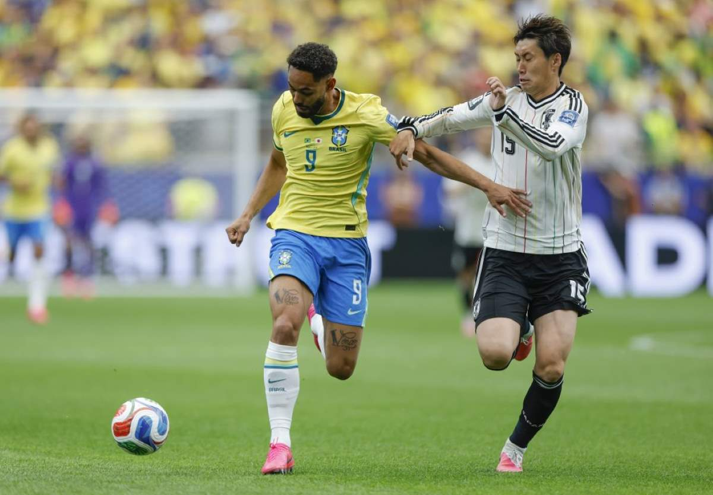

Repórter Davi
Notícias de Feira de Santana e Região
Repórter Davi
Notícias de Feira de Santana e Região
Com o resultado de 2 a 1, o Brasil segue vivo e avança para a fase de oitavas de final da Copa do Mundo 2026.
Publicado em 29/06/2026

Foto: Rafael Ribeiro/ CBF
A Seleção Brasileira está nas oitavas de final da Copa do Mundo. Em uma partida marcada pela superação, o Brasil venceu o Japão por 2 a 1, de virada, na tarde desta segunda-feira (29), no NRG Stadium, em Houston, nos Estados Unidos, e manteve vivo o sonho do hexacampeonato.
O primeiro tempo foi de dificuldades para a equipe brasileira. Mesmo com várias tentativas de gol, foi o Japão quem aproveitou melhor os espaços e abriu o placar aos 28 minutos. Após um passe errado de Danilo, Kaishu Sano recuperou a bola, avançou pelo meio e acertou um chute rasteiro de fora da área, sem chances para o goleiro Alisson.
Na volta do intervalo, o Brasil mostrou outra postura. Pressionando desde os primeiros minutos, a equipe empurrou os japoneses para o campo de defesa e chegou ao empate aos nove minutos da etapa final, quando Casemiro subiu mais alto que a marcação para marcar de cabeça.

Foto: Rafael Ribeiro/ CBF
A igualdade deu ainda mais confiança à Seleção, que passou a controlar as ações ofensivas e criou diversas oportunidades. A insistência foi recompensada nos acréscimos e com a boa pedida de Ancelotti que tirou Gabriel Martinelli do banco. Bruno Guimarães encontrou Martinelli dentro da área, e o atacante dominou antes de finalizar para marcar o gol da classificação brasileira.
O resultado também teve um sabor de revanche. Em outubro de 2025, as duas seleções se enfrentaram em um amistoso internacional, quando o Brasil chegou a abrir 2 a 0, mas sofreu a virada por 3 a 2 após falhas no segundo tempo. Desta vez, a história foi diferente: foi a Canarinho quem buscou a reação e saiu vencedora.
Com a classificação assegurada, a equipe de Carlo Ancelotti agora aguarda o vencedor do confronto entre Costa do Marfim e Noruega, que será disputado nesta terça-feira (30), às 14h (horário de Brasília), no AT&T Stadium, em Dallas.
O adversário do Brasil nas oitavas de final será definido neste duelo. A partida está marcada para o próximo domingo (5), às 17h (horário de Brasília), no MetLife Stadium, em Nova Jersey, também nos Estados Unidos.